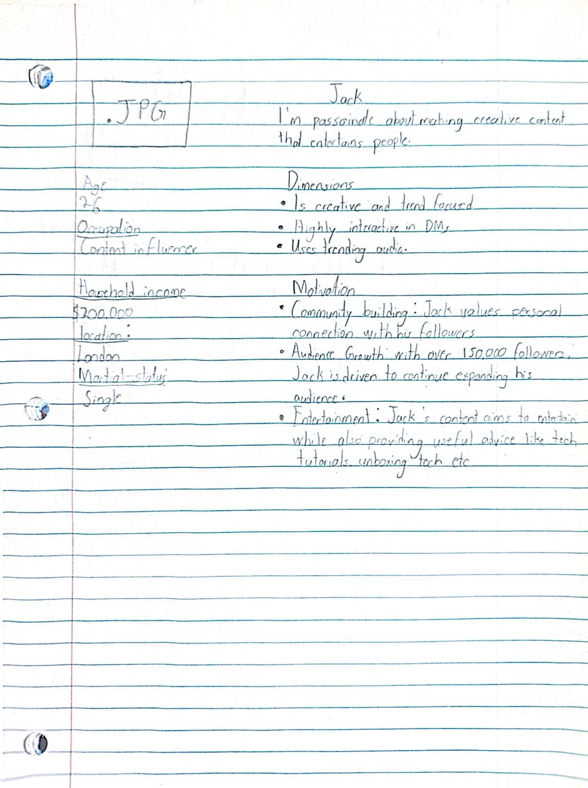

Out of all the social networking sites I have ever used. One social network I have used, and I must admit that it is excellently crafted, is Instagram. Its design stands out the most compared to other social media apps is easy use for its users. In addition, more creative, stylish elements are added in such a way that it will make you feel that the application is fun and easy to use. Let’s take the example of sharing pictures and videos. Within few efforts you can upload your photos and videos for the world to see which also ecourages you post more as to how easy it is. In order to keep their audience interested, Instagram creates various promotional projects for their application, looking into other business models. Instagram also elaborates how their audience includes teenagers that are actively tweeting and posting thousands of photos, thus, emphasizing self-creation and participation. teenagers repeatedly visit the app because the feeds are personalized thanks to the recommendation algorithm. For example instagram reels have an algorithm which makes the users hooked to it by showing short video clips they like to see.
Software design is an important aspect as this influences the extent to which a user will be satisfied and engage in the given application. An application with a quality design does not only make users to come but also keep them to provide the proper flow. A good design encompasses practical, eassily usable and visually pleasant that enable users to achieve their entertainment in a comfortable manner. Or in simpler words, if the design is more confusing and less user friendly; then customers will not use the application.
For the above reasons, it is evident that software design must be carried out with a lot of intelligence so that such applications cater for the needs and expectations of the users and hence succeed in the competitive environment.
The main idea of the requirement gathering stage in software development is to understand the needs of the users and stakeholders from the software product. Clear information must be gathered about what the software should be able to do, what features it should have, and what rules or limitations exist for the software. The developers and project teams then hold interviews, surveys, and workshops in this stage to collect insights and negotiate expectations. They produce documents like the requirement specifications that outline all the details of importance. This is a crucial stage since it lays the foundation for the entire development process. Once the developers comprehend what needs to be done, then they can generate a strategy that would indeed meet user expectations and avoid costly changes later. Clear requirements help ensure the usefulness, effectiveness, and fit of the user needs of the resulting product. This also ensures proper use of time and resources during the execution of the project, hence reducing the occurrence of misunderstandings or skipped features. In general, requirement gathering makes for a successful software product.
.Five user stories.
- As a user, i want to upload photos amd videos from my device so that i can share my experiences.
- As a user, i want to apply fliters to my photos so that i can enhance their appearance.
- As a user, i want to tag other users in my posts so that i can include them in my experiences.
- As a user, i wnat to explore trending content on my for you page so that i can discover new posts and accounts.
The next person is a typical intsagram content creater who variuous content.
Jack, 27
Occupation: Content Creator
Jack is an Instagram content creator who commands the attention of over 100,000 followers with his colorful Reels and high engagement ratio. A renowned short video sensation, he creates content on gaming, tech tutorials, comedy skits, and lifestyle vlogs. He always tries to keep his content fresh and engaging with trending audio, creative shots, and unique editing.
He brainstorms, films, and edits every day so that his Reels come out fresh and funky. He gives a lot of importance to DMs while networking with his audience. Using DMs lets him create a more personalized experience with the audience. His Instagram feed reflects the different things he's interested in and shows how he can make varied content on everything from fitness tips to tech insights to funny memes. Jack encourages and develops connections through highly engaging posts and personalized messages with his online community which in turn helps connect with his audience and create a respectful following.
